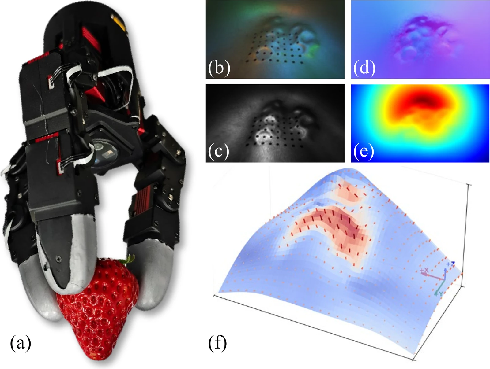
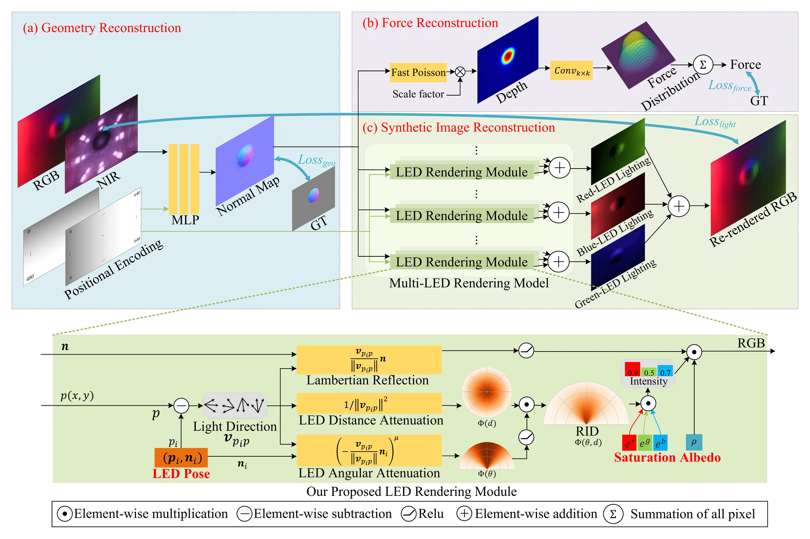
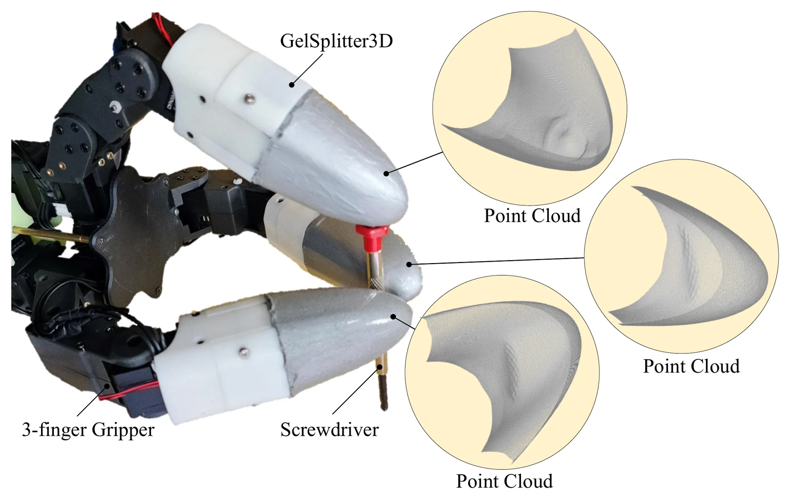
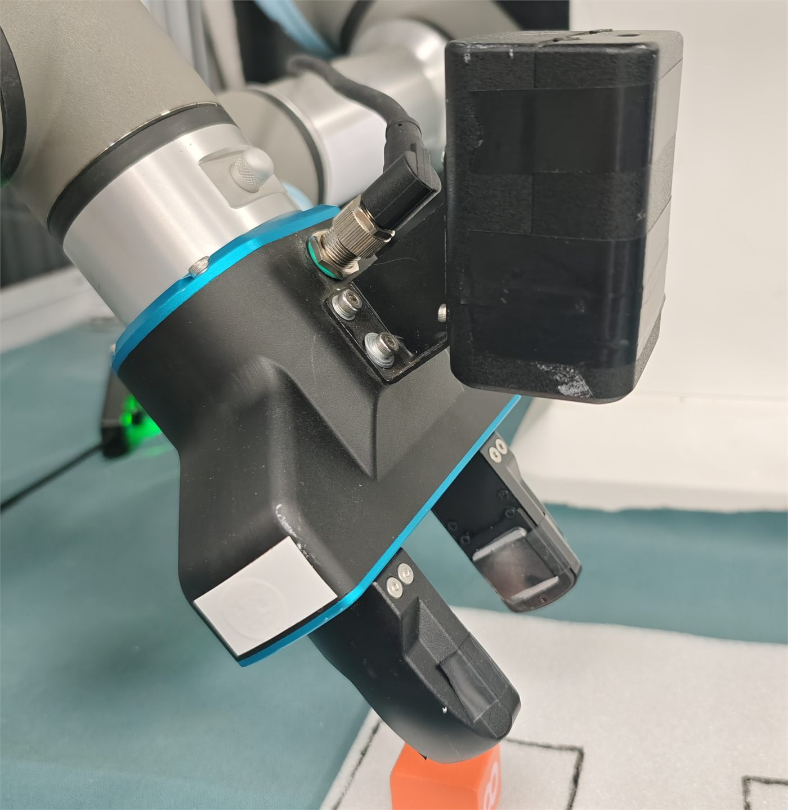
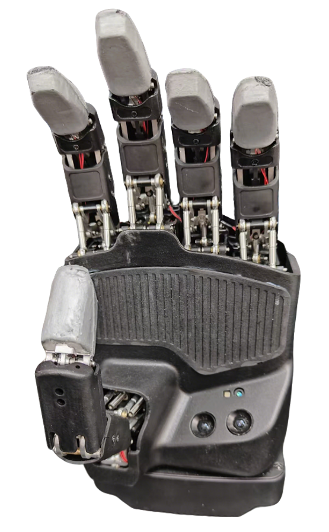
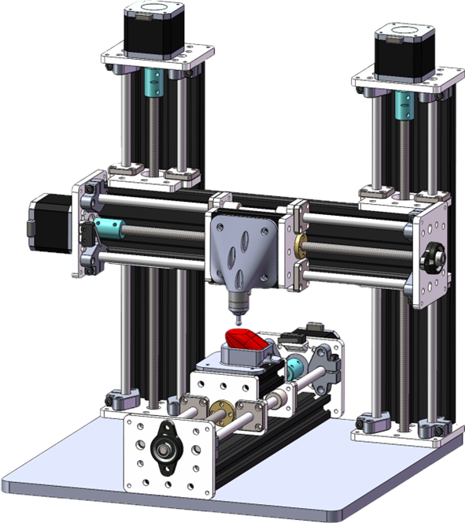

2024 - 2027
M.Eng. in Mechanical Engineering
Huazhong University of Science and Technology, Wuhan, China
I am an M.Eng. student in Mechanical Engineering at Huazhong University of Science and Technology, advised by Prof. Hua Yang. My research focuses on vision-based tactile sensing for contact-rich robotic manipulation.
I work across sensor structure and fabrication, imaging hardware, geometric and force calibration, 3D reconstruction, force estimation, neural inverse rendering, and FPGA acceleration. I am interested in systems where sensing mechanics, perception algorithms, and real-time deployment are designed together.
Huazhong University of Science and Technology, Wuhan, China
Huazhong University of Science and Technology, Wuhan, China
Selected peer-reviewed work. My name is shown in bold.

A curved RGB-NIR vision-tactile fingertip for 3D shape reconstruction, three-axis force perception, and FPGA edge acceleration.
Manuscript under review, 2026

High-fidelity tactile reconstruction, self-calibration, and synthetic tactile image generation with RGB-NIR sensing.
IEEE/ASME Transactions on Mechatronics, 2025

A curved RGB-NIR tactile fingertip with neural photometric stereo and geometry-prior normal integration.
IEEE/RSJ International Conference on Intelligent Robots and Systems (IROS), 2025
Selected research and engineering work across sensing, perception, and deployment.
Leading the development of a curved RGB-NIR tactile sensing system spanning sensor design, automated calibration, boundary-aware 3D reconstruction, marker displacement recovery, and position-aware three-axis force estimation.
Reported results include 0.0415 mm depth MAE and 2.74% normal-force NMAE.
Developing hardware-oriented pipelines for surface-normal inference, boundary-prior depth reconstruction, and normal-force estimation on Xilinx Zynq UltraScale+ platforms.
Paper-reported computation rates reach 1022 Hz for image-to-depth and 918 Hz for image-to-normal-force.
Contributed vision-tactile sensor adaptation, fabrication, integration, and perception algorithms for two-finger, three-finger, and five-finger robotic end effectors.
Focused on repeatable calibration, contact geometry reconstruction, and system-level validation.
Hardware systems I helped build for vision-based tactile manipulation.



